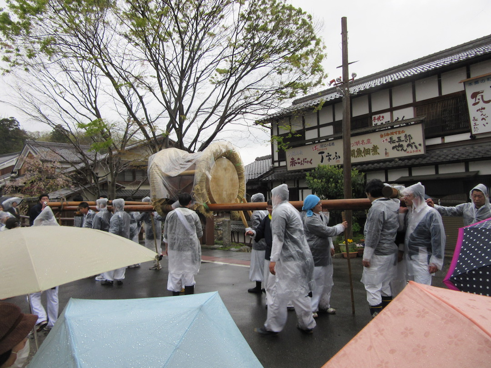

Today, my friends and I had gone to Omihachiman, a small town about a twenty minute train ride away from Kyoto, to see the 'Drum Festival' that they were holding today. It was a very interesting experience, there were many groups of men, carrying these large drums that looked like they weighed a ton. They were all carrying them to this shrine, where they would be blessed, then go on back to the street, following a circular path to start over again. There was also a lot of interesting stands selling all sorts of foods, the best being some grilled chicken, and a stand selling freshly made smoothies. Oh, an odd thing that happened wsa that we ran into another American at the festival, and when he greeted me in english, I replied about 3 times in japanese before I responded in english. It's a good thing my friends were more prepared to talk to him than I was!
